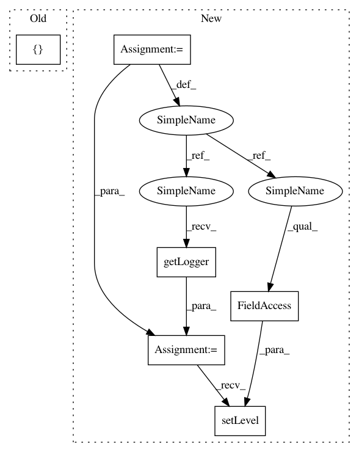

e1cfdfa129aa4b346ae6a8b29d1664dac3dc3759,solutionbox/image_classification/mltoolbox/image/classification/_cloud.py,Cloud,batch_predict,#Any#Any#Any#Any#Any#,147
Before Change
"staging_location": os.path.join(pipeline_option["temp_location"], "staging"),
"job_name": job_name,
"project": _util.default_project(),
"extra_packages": [staging_package_url],
"teardown_policy": "TEARDOWN_ALWAYS",
"no_save_main_session": True
}
After Change
opts = beam.pipeline.PipelineOptions(flags=[], **options)
p = beam.Pipeline("DataflowRunner", options=opts)
_predictor.configure_pipeline(p, dataset, model_dir, output_csv, output_bq_table)
logger = logging.getLogger()
logger.setLevel(logging.ERROR)
original_level = logger.getEffectiveLevel()
try:
job_results = p.run()
finally:
In pattern: SUPERPATTERN
Frequency: 4
Non-data size: 6
Instances
Project Name: googledatalab/pydatalab
Commit Name: e1cfdfa129aa4b346ae6a8b29d1664dac3dc3759
Time: 2017-03-06
Author: qimingj@users.noreply.github.com
File Name: solutionbox/image_classification/mltoolbox/image/classification/_cloud.py
Class Name: Cloud
Method Name: batch_predict
Project Name: AlexsLemonade/refinebio
Commit Name: 7357bae127516cf1fb6f9b7b2b6034e24ad1d444
Time: 2018-07-06
Author: kurt.wheeler91@gmail.com
File Name: workers/data_refinery_workers/settings.py
Class Name:
Method Name:
Project Name: AlexsLemonade/refinebio
Commit Name: 7357bae127516cf1fb6f9b7b2b6034e24ad1d444
Time: 2018-07-06
Author: kurt.wheeler91@gmail.com
File Name: foreman/data_refinery_foreman/settings.py
Class Name:
Method Name:
Project Name: googledatalab/pydatalab
Commit Name: e1cfdfa129aa4b346ae6a8b29d1664dac3dc3759
Time: 2017-03-06
Author: qimingj@users.noreply.github.com
File Name: solutionbox/image_classification/mltoolbox/image/classification/_cloud.py
Class Name: Cloud
Method Name: preprocess